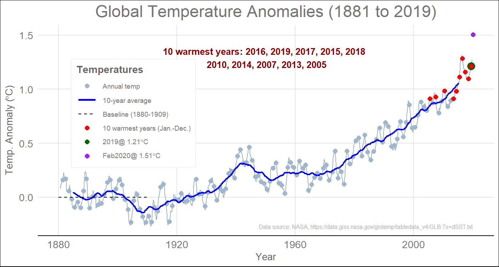
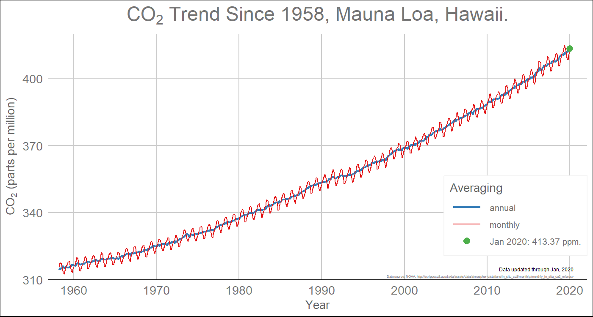
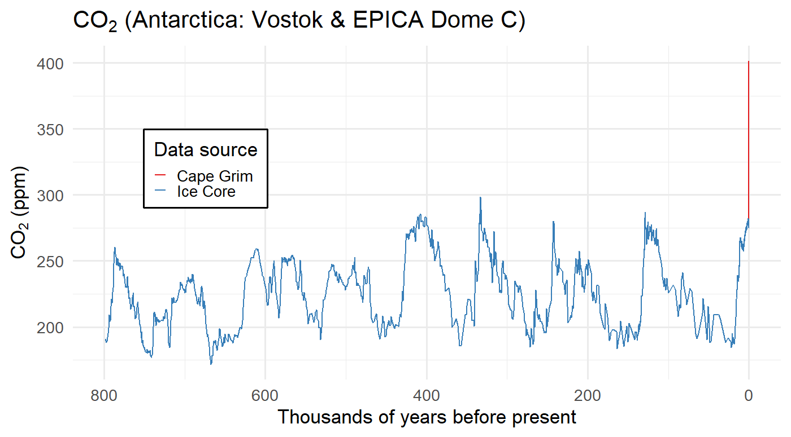

Introduction to Climate Change
EES 3310/5310
Global Climate Change
Jonathan Gilligan
Class #1: Mon. Jan. 6 2020
Questionnaire
- Please fill out the questionnaire and return it to me.
- Page 1: About you
- Page 2: About this course
Some Housekeeping:
- The main class website is at https://ees3310.jgilligan.org
- Copies of the
- syllabus,
- reading assignments,
- lab assignments,
- readings
- instructions
- files you will use for the labs
- slides from class (also link from QR code on title slide)
- Links to helpful resources.
- Slides:
- The title slide has QR code with link to online version.
- PDF versions are also posted to course web site (link on title slide)
- Slides have two-dimensional navigation (in a browser, hit “?” for help)
Is the Climate Changing?
Is the Climate Changing?
- What does it mean for climate to change?
- How would you know whether it’s changing?
Is the Climate Changing?
- August 2016 was the hottest month worldwide since record-keeping began in 1880.
- 2016 was the hottest year on record.
- 2015 was the second hottest.
- 2017 was the third hottest.
- 2018 was the fourth hottest.
- 2019 is likely to become the new second-hottest.
Are People Causing Climate to Change?
- How can we tell?
- How certain can we be?
How Will Climate Change Affect
Our Lives in Years to Come?
- What kinds of changes might affect us?
- How can we tell whether they will happen?
- And when?
- And how severely?
Dangerous heat waves becoming more common.
- Two of the ten deadliest heat waves in history happened in 2015.
- Six of the ten deadliest heat waves happened since 2000.
- Huge heat wave May/June 2017 stretching from Middle East to Europe and across Asia.
- June 2017 heat wave in Phoenix AZ was too hot for many airplanes to fly. More than 40 flights grounded.
- Record-breaking temperatures throughout Australia this year
What Does Science Say?
How Can We Answer These Questions?
- How can you know whether climate is changing?
- How can you know what’s causing it?
- How can you know what it will do in the future?
- How can you persuade someone else?
- What would you need to know to be more certain?
- If it is a problem …
- What can we do about it?
- What should we do about it?

Nuts and Bolts about the Course
Goals for the Course
- Scientific Understanding:
- What do we know about climate?
- How do we know it?
- How certain are we?
- Applied to:
- Past climate conditions
- Causes of climatic change
- Predictions of future climate change
- Impact of climate on people’s lives
Structure of the Course
- Science
- What determines the earth’s temperature?
- What are people doing that might change this?
- What do we observe?
- How will things change in the future?
- Policy:
- How will these changes affect people’s lives?
- What can we do?
- How much will it cost?
- What actions will others agree to?
Overview of the Semester
Syllabus and Planning for the Semester:
Important Dates:
- Wed. Feb. 19: Midterm Exam
- Mon. Mar. 9: “Energetic” game: Convert NYC to clean energy
- Mon. Mar. 30: Role-Playing Exercise on Cap-and-Trade in Lab
- Take-Home Final Exam:
- Open book, essay format.
- Focus on applying big concepts.
- Due Wed. Apr. 29. (turn in electronically)
Textbooks

|
David Archer, Global Warming: Understanding the Forecast (2nd Edition) |

|
William Nordhaus, The Climate Casino |

|
Roger A. Pielke, Jr., The Climate Fix |

|
Hadley Wickham & Garrett Grolemund, R for Data Science (Free web version online at http://r4ds.had.co.nz/)
|
Laboratory
- Goals:
- Download and analyze climate data
- Work with interactive computer models
- Learn about reproducible research
- Computational Tools:
- Free, open source
- R and RStudio for data analysis
- Markdown and RMarkdown for writing reports
- git and Github for managing files
- Today in lab:
- Introduction to software tools
- Bring your laptop if you can
- Sign up for free account on github.com
- Later this week…
- Read introductory documentation for lab tools
- Start playing with R and RStudio
- Next Monday, we will begin learning R in depth and applying it to analyzing climate data.
Class and Lab Material
- Main source of material: ees3310.jgilligan.org
- Syllabus
- Reading assignments for the semester
- Do the assigned reading before class on the day it’s assigned for.
- Reading and assignments for Lab
- Slides from class:
- Web-based and PDF versions
- Posted on ees3310.jgilligan.org/schedule/
- Slides:
- The title slide has QR code with link to online version.
- PDF versions are also posted to course web site (link on title slide)
- Slides have two-dimensional navigation (in a browser, hit “?” for help)
Science, Policy, and Climate
Science of Climate
- What determines earth’s temperature?
- Sunlight
- Greenhouse effect
- Other factors
- Chemistry of the atmosphere:
- What are greenhouse gases?
- What happens when people release them into the atmosphere?
- Consequences of climate change
Climate Policy
- What are consequences of climate change?
- What alternatives to fossil fuels?
- What would they cost?
- How to transition to low-carbon energy?
- Who should pay?
- How to build political agreement?
How Politicians Talk about Climate Change
Stereotype of Democrats
Stereotype of Republicans
It Wasn’t Always Like This
It Wasn’t Always Like This
It Wasn’t Always Like This
Today’s GOP Climate Activists
- Arthur Laffer (Economic Adviser to President Reagan)
- Bob Inglis (Former Republican Congressman from South Carolina)
What Do You Want
To Know About
Climate Change?
What Do We Know About Climate Change?
What’s Happening?



Past 2000 Years

800,000 years of CO2
